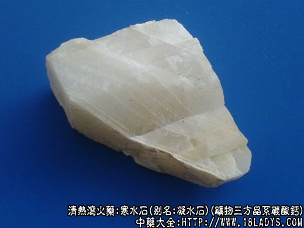

寒水石为少常用中药。始载《神农本草经》，列为中品。原名“凝水石”。现各地使用的寒水石主要有两大类，华北、东北、西北部分地区及京津两市用品为石膏中的红石膏。南方各省则习用方解石作寒水石用。
别名：凝水石。
来源：1、红石膏寒水石，详见石膏。
2、方解石寒水石，为矿物三方晶系碳酸钙。多产于沉积岩和变质岩中，石灰岩山洞很温泉附近的沉积物也是方解石。金属矿脉中也多有方解石存在，而且晶体较好。
产地：
1、红石膏，主产于山东省潍坊地区以安丘县产品为最好，此外济宁地区亦有生产。
2、方解石，主产于中南、华东、西南等地区，本品分布很广遍及全国各省。
性状鉴别：1、红石膏：呈不规则的扁平块状，大小不一，厚约0.5～1.5厘米，肉色或粉红色（因有少量的铁和铝），横平面凸凹不平，偶附有棕红色粘土，侧断面显纤维状纹理，有绢丝光泽，体重质硬而脆，易砸碎。气微味淡有土腥味。
2、方解石：呈斜方柱形或方块形，有棱角大小不等白色或灰白色，半透明或不透明。表面平滑，有玻璃样光泽，质坚硬，易砸碎，碎块仍为方块形或斜方形，气微味淡。
主要成分：方解石主要含碳酸钙，混入物有镁、铁等离子。
药理作用：
1、解热、消炎。作用于石膏类似。
2、泻下。因含硫酸镁，故可泻下而不治便秘。
炮制：生用或煅用。
性味：辛、咸、寒。
归经：入肺、胃、肾三经。
功能：清热降火，除烦止渴。
主治：伤寒热盛，壮热烦渴，口干牙痛，小便赤少。
临床应用：主治与石膏同，但较少用。
1、治暑热病（夏季急性热性传染病），有高热、烦渴、苔黄等症候者，配石膏、滑石等，方如三石汤。
2、外用治水烫伤。配炉甘石、石膏等，如烫伤散。用其粉末撒于创面，可止痛和减少创面渗出。
用量：9～30g。
处方举例：
1、三石汤。寒水石9g（打碎先煎）、滑石9g、生石膏18g（打碎先煎）、杏仁9g、竹茹6g、金银花9g、通草6g，水煎服。
2、烫伤散（南京）。寒水石30g、石膏30g、炉甘石30g（以上三种水飞成细末），加冰片3g，成极细粉，局部喷洒洒于创面。
注：除上述两种寒水石外，1、据《山西中草药》第126页寒水石项下附注记述：本省一些地方误将龟背状“玄精石”作寒水石入药，应加以区别不宜混淆。
2、据《中药鉴别手册》第一册第486页寒水石项下记述。山西、陕西、甘肃部分地区以透明石膏作寒水石用。但其图形和药材的性状介绍，又与山西用的玄精石不完全相同，主要是晶体结构不同，敲击时透明石膏平滑面平行裂成片状，颇似云母片、玄精石则顺长纵形断裂成长方形。
3、现用寒水石存在着同名异物的情况，从红石膏与方解石的形色成分等多方面均不相同，不应统称寒水石，应进一步研究其性味功能，从名称上给予不同的命名以免长期混淆下去，影响医疗效果。
4、据《中药志》考证《神农本草经》、《名医别录》、《本草纲目》所载的寒水石与芒硝相似。